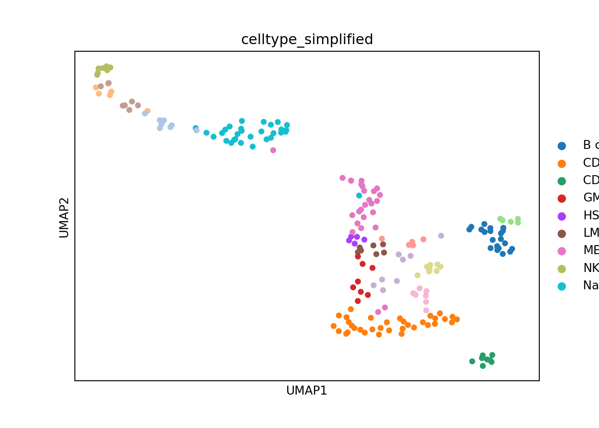
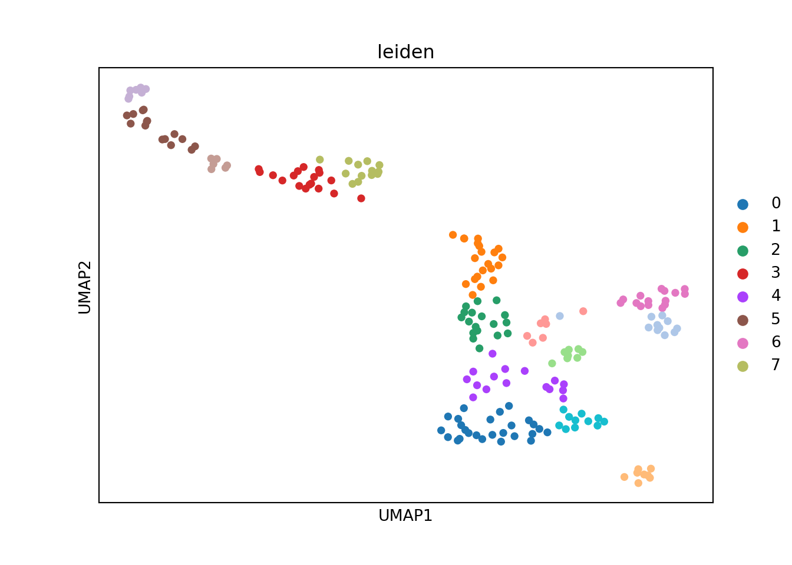

6.2 Standard analysis (Python)
In this section, standard analysis includes dimensionality reduction, clustering, differential expression etc using Scanpy framework.
import numpy as np
import pandas as pd
import scanpy as sc
sc.settings.verbosity = 1 MC_tool = "SEACells"
proj_name = "3k_pbmc"
annotation_column = "louvain"
adata = sc.read(os.path.join('./data', proj_name, f'metacell_{MC_tool}.h5ad'))6.2.1 Dimensionality reduction
adata.var_names_make_unique() # this is unnecessary if using `var_names='gene_ids'` in `sc.read_10x_mtx`
sc.pp.normalize_per_cell(adata)
sc.pp.log1p(adata)
sc.pp.highly_variable_genes(adata, n_top_genes=2000)
# Freeze the state of the AnnData object for later use in differential testing and visualizations of gene expression
adata.raw = adata # step needd only if I use regress_out steps
# Compute PCA (highly variable genes will be used)
sc.tl.pca(adata, svd_solver='arpack')
# Compute the neighbor graph
sc.pp.neighbors(adata, n_neighbors=15, n_pcs=30)
#> /mnt/c/Aurelie/postdoc_UNIL/Metacell_review/tuto/Metacell_tutorial/my_env/lib/python3.8/site-packages/umap/distances.py:1063: NumbaDeprecationWarning: The 'nopython' keyword argument was not supplied to the 'numba.jit' decorator. The implicit default value for this argument is currently False, but it will be changed to True in Numba 0.59.0. See https://numba.readthedocs.io/en/stable/reference/deprecation.html#deprecation-of-object-mode-fall-back-behaviour-when-using-jit for details.
#> @numba.jit()
#> /mnt/c/Aurelie/postdoc_UNIL/Metacell_review/tuto/Metacell_tutorial/my_env/lib/python3.8/site-packages/umap/distances.py:1071: NumbaDeprecationWarning: The 'nopython' keyword argument was not supplied to the 'numba.jit' decorator. The implicit default value for this argument is currently False, but it will be changed to True in Numba 0.59.0. See https://numba.readthedocs.io/en/stable/reference/deprecation.html#deprecation-of-object-mode-fall-back-behaviour-when-using-jit for details.
#> @numba.jit()
#> /mnt/c/Aurelie/postdoc_UNIL/Metacell_review/tuto/Metacell_tutorial/my_env/lib/python3.8/site-packages/umap/distances.py:1086: NumbaDeprecationWarning: The 'nopython' keyword argument was not supplied to the 'numba.jit' decorator. The implicit default value for this argument is currently False, but it will be changed to True in Numba 0.59.0. See https://numba.readthedocs.io/en/stable/reference/deprecation.html#deprecation-of-object-mode-fall-back-behaviour-when-using-jit for details.
#> @numba.jit()
#> /mnt/c/Aurelie/postdoc_UNIL/Metacell_review/tuto/Metacell_tutorial/my_env/lib/python3.8/site-packages/umap/umap_.py:660: NumbaDeprecationWarning: The 'nopython' keyword argument was not supplied to the 'numba.jit' decorator. The implicit default value for this argument is currently False, but it will be changed to True in Numba 0.59.0. See https://numba.readthedocs.io/en/stable/reference/deprecation.html#deprecation-of-object-mode-fall-back-behaviour-when-using-jit for details.
#> @numba.jit()
# Run umap
sc.tl.umap(adata)
# Plot metacells in the UMAP space
sc.pl.umap(adata, color=[annotation_column], size = 100)
#> /mnt/c/Aurelie/postdoc_UNIL/Metacell_review/tuto/Metacell_tutorial/my_env/lib/python3.8/site-packages/scanpy/plotting/_tools/scatterplots.py:392: UserWarning: No data for colormapping provided via 'c'. Parameters 'cmap' will be ignored
#> cax = scatter(
6.2.2 Clustering
Perform clustering on the metacell data.
# run laiden graph-clustering
sc.tl.leiden(adata, neighbors_key = "neighbors", resolution = 2)
# plot the metacells in the UMAP space and color by cluster
sc.pl.umap(adata, color=['leiden'], size = 100)
#> /mnt/c/Aurelie/postdoc_UNIL/Metacell_review/tuto/Metacell_tutorial/my_env/lib/python3.8/site-packages/scanpy/plotting/_tools/scatterplots.py:392: UserWarning: No data for colormapping provided via 'c'. Parameters 'cmap' will be ignored
#> cax = scatter(
6.2.3 Differential expression analysis
Identify marker genes for each group of metacells. Note that here we use the clusters since the Megakaryocytes contain only one metacells. We visualize the top 3 markers for CD8 Tcells.
# Identify marker genes
sc.tl.rank_genes_groups(adata, 'leiden', method='wilcoxon')
sc.pl.rank_genes_groups(adata, n_genes=25, sharey=False)
#> /mnt/c/Aurelie/postdoc_UNIL/Metacell_review/tuto/Metacell_tutorial/my_env/lib/python3.8/site-packages/scanpy/plotting/_tools/__init__.py:397: UserWarning: Attempting to set identical low and high ylims makes transformation singular; automatically expanding.
#> ax.set_ylim(ymin, ymax)
# Show the top marker genes
print(pd.DataFrame(adata.uns['rank_genes_groups']['names']).head(5))
#> 0 1 2 3 4 5 6 7
#> 0 RPL31 FOLR3 CD8A LTB CST3 STXBP2 XCL2 TNFRSF13C
#> 1 RPL32 S100A9 CCL5 TNFRSF4 HLA-DRB5 MS4A4A KLRF1 CD79A
#> 2 CCR7 S100A8 LYAR AQP3 HLA-DRB1 RHOC RAMP1 GNG7
#> 3 RPS6 BST1 CD8B CD40LG HLA-DPA1 CDKN1C CLIC3 PPAPDC1B
#> 4 RPS27 MGST1 KLRG1 CD2 TMSB10 FCER1G PRF1 HLA-DOB
# Visualize marker genes
sc.pl.violin(adata, ['CD8A', 'CCL5', 'LYAR'], groupby=annotation_column, size = 2, rotation = 90)